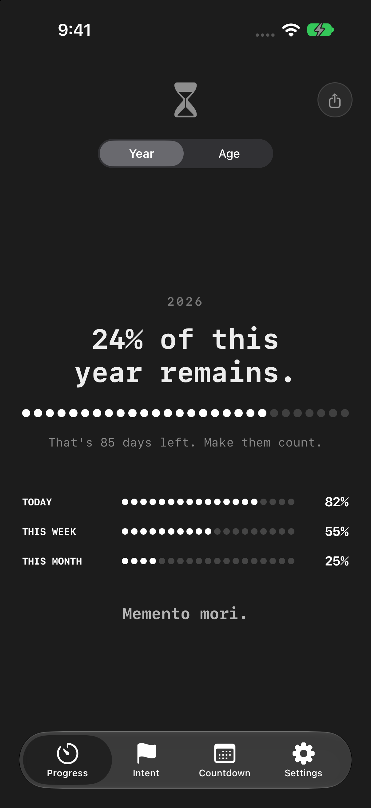
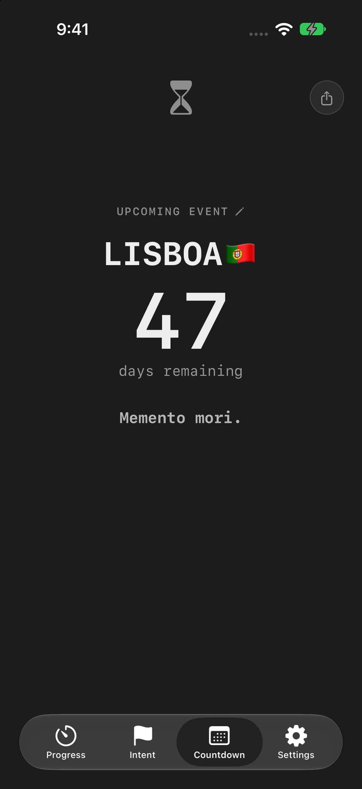
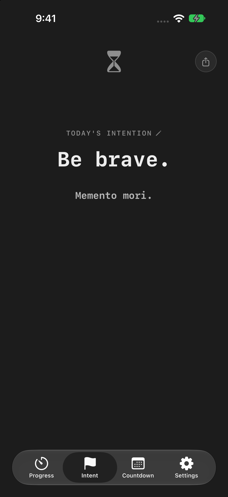

Dotted Line
iPhone, iPad, and Mac
After my son was born, I quickly realized how little time we have on this earth and how quickly it passes. I built Dotted Line to remind myself of that and to live each day with intention.
Dotted Line shows your day, week, month, and year in dots, with event countdowns, daily intentions, and Home Screen widgets. The core app is free on iPhone and iPad; a one-time Premium purchase unlocks widgets, custom colors, and the Mac app.
Screenshots




Questions about Dotted Line? Email me.